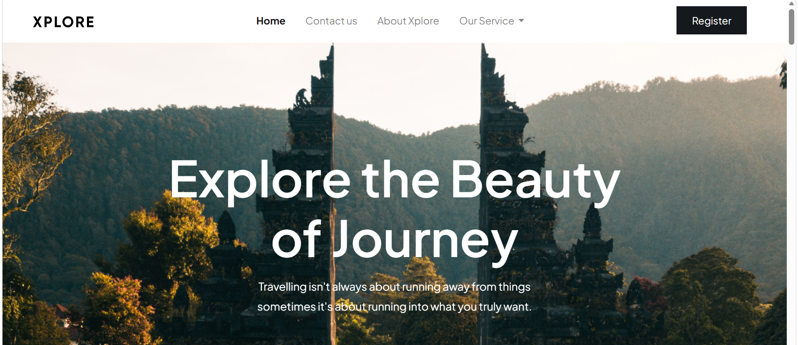

Menghadirkan pengalaman navigasi pariwisata yang imersif dan interaktif melalui platform web modern.

Welcome to Xplore, your ultimate destination for unforgettable travel experiences. At Xplore, we believe that travel has the power to inspire, educate, and transform lives, With our passion for exploration and dedication to exceptional service, we strive to create extraordinary journeys that leave a lasting impact. Proyek ini dikembangkan sebagai purwarupa (prototype) web pariwisata yang interaktif dan estetis.
Frontend Developer & UI/UX Implementer — Mengembangkan proyek ini bekerja sama dalam tim berdua dengan seorang rekan (collaborative team of 2), bertanggung jawab penuh atas penerjemahan desain antarmuka, tata letak halaman, hingga fungsionalitas interaktif berbasis skrip web.
Berdasarkan antarmuka yang dirancang pada tampilan web, berikut adalah fitur-fitur penting yang dibangun untuk pengguna: